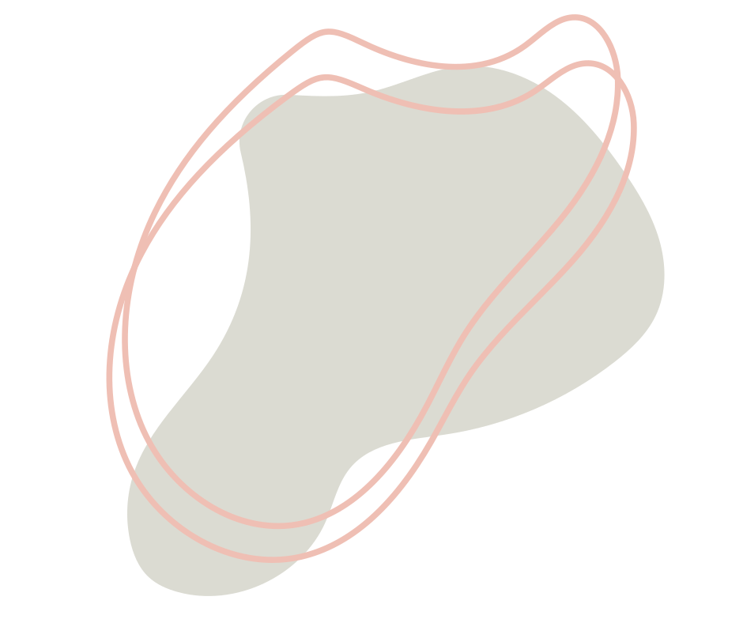
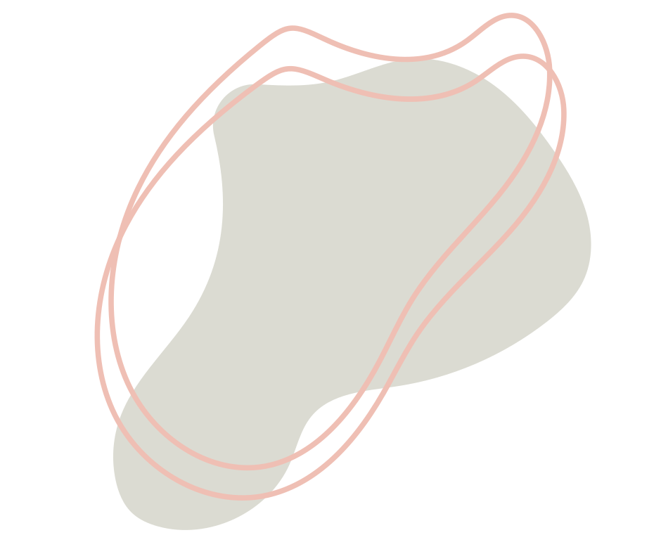

Ho conseguito la laurea triennale in Scienze e Tecniche Psicologiche e
la laurea magistrale in Psicologia Clinica presso l'Università di
Bologna. Credo nell'importanza della formazione continua, per cui sto
frequentando la Scuola di Specializzazione in Psicoterapia
Cognitivo-Comportamentale presso Studi Cognitivi Rimini. Questo è un
approccio che mette in relazione pensieri, emozioni e comportamenti
per comprenderli e trasformarli in modo efficace.
Faccio parte dell'associazione Psicologia Urbana e Creativa APS
(https://pucravenna.it/), con cui promuovo progetti gratuiti
per la cittadinanza su temi come la prevenzione della violenza di
genere, l'educazione alla pace e alla NonViolenza.
 
